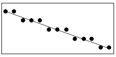
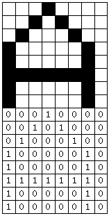

一幅好的图形胜过千言万语，此话一点也不假。若不是图形在PC的发展史上占据着独到的地位，也就不会有今天种类繁多的图形加速卡了。当然，更不会有WINDOWS、CAD与MultiMedia，以及令人百玩不厌的电子游戏了。
笔者之所以自学汇编语言，也是缘于图形。笔者最早使用的电脑是一台具有HGC显示系统的XT兼容机，HGC显示系统虽具有图形功能，但并非所有的软件都支持它的图形显示功能。所以笔者一直为使用GWBASIC无法编制图形程序而烦恼。更令人郁闷的是笔者所拥有的唯一一个游戏--挖金子无法运行。
偶然一次机会，笔者从一本《计算机世界》杂志上看到了一个HGC仿真CGA的汇编程序，觉得十分新奇。于是便仔细研究了有关汇编语言的一些初步知识，最终利用DEBUG实现了这个程序。使笔者的那台小电脑有了更多的功能。后来，我终于弄到了MASM 4.0版的编译程序，于是便开始了对汇编语言的全面深入研究。
我们下面的任务就是详细研究一下PC电脑上最简单的图形模式——CGA。
CGA是IBM第一个彩色图形显示标准。我们现在主要研究的是设计图形程序所需的基本知识和基本思想，这对于我们前后研究其它图形显示系统是很有帮助的。再者说，笔者也不能保证本书的所有读者都有VGA以上的图形显示卡，如果某位读者只有HGC卡，那么本书抛弃CGA不谈就有些不负责任了。
在这一章里我们将沿用第六章的思路，首先由BIOS谈起，最后谈到端口。我们知道PC的显示系统具有一个最大的特点就是将字符的显示与图形显示分成两种模式进行处理。
PC电脑将字符与图形分开处理而且将字符状态分成了几个不同的形式（40 25、80 25），对于图形模式也是这样。就CGA而言，它具有三种图形模式，我们将要研究的是图形模式4，在这种显示模式下，整个屏幕在水平方向上可以显示320个点，垂直方向上可以显示200个点而每个点都可以是4种颜色中的任一种，即同时出现在屏幕上的颜色有4种。这就是图形模式4所能提供的能力，如果用一组数字来表示，就是320 200 4c。
从现在的角度来看，这样的能力无疑是极端低下的。然而我们也不得不承认，我们自己目前的能力也并不是很强，毕竟我们现在是在入门。
设置模式同样使用BIOS 10H中断的0号功能，其用法第六章中已解决。我们下面就通过一个小程序将显示系统设为CGA模式4，看看效果如何。
图形模式与字符模式最大的区别恐怕就是光标在图形屏幕上消失了。不过字符却能够显示。只不过此时出现在屏幕上字符已不再是简单地在显示缓冲存储器中写入字符的ASCII码与属性字节了，显示缓存的组织形式与字符模式是完全不同的。
C:\ASM\>DEBUG[Enter] -a100 121D:0100 mov ax,0004 121D:0103 int 10 121D:0105 int 20 121D:0107
有一点还要提醒各位，即使显示系统已被设定为图形模式，但BIOS 10H中断所提供的字符显示功能包括设定光标位置等同样可以应用。10H中断服务会自己判断显示系统的工作模式而采取相应的方法完成这些功能。我们编制程序时仍可调用这些功能。
在讨论具体的图形功能调用之前我们需要先搞清楚这样几个问题：
一幅图形究竟由什么构成，美术工作者也许会说图形是由一系列线条或色块构成。此种说 法并不错，但并不适用于计算机。电脑中的图形，无论是出现在显示器上还是打印机上，其实都是由一系列的点组成。以最简单的图形--直线为例，当一组点以很密的间距排列时，从总体上看它们就是一条直线（图9-1）。而且点越小越密，所组成的线就越细越光滑。所以我们可以看出，如果能解决在显示器上画"点"这个问题，实际上也就解决了画图的问题。

在第六章里我们对这个问题已有所讨论。各种色彩都可以由三种“基本色”红（Red）、绿（Green）、蓝（Blue）（通常称之为RGB）合成出来。就CGA而言，它具有两个彩色组，每组的4种色彩分别由数字0、1、2、3表示，具体的对应关系如下：
彩色组0：0--屏幕底色 1--绿色 2--红色 3--黄色
彩色组1：0--屏幕底色 1--青色 2--品红 3--白色
一般情况下电脑默认使用彩色组1的四种色彩，不过BIOS提供了一个功能调用，用于选定使用彩色组0。
计算机中的字符与图形本是一回事。显示器上出现的字符也是由点组成的，这一点我们在第六章已有讲述。比如说字母A，它在屏幕上实际是如图9-2所示的一组点。

现在的问题就是这样一组点如何用数字表示。试想如果我们把不亮的点用0表示，把亮点用1表示，那么字母A最顶端的8个点就可以表示为"00010000"，这实际上是一个8位二进制数。下面几行同样可以用几个8位二进制数表示，因此字母A可以用8个8位二进制数表示，共用8个字节。
在计算机内有很多地方使用这种方法描述文字与符号，我们所常见的汉字也有用此方法描述的。只不过由于汉字的宽度与高度都大于8个点，所以描述汉字要使用更多的字节。
我们常把描述一个字符（汉字）的一组点称为"点阵"，而把"点阵"的"数字表示"称为"字模"（Font Mask），以刚才所举的字母A为例，组成字母A的64个点就是这个字母的点阵，而表示这个点阵的8个8位二进制数就是这个字母的字模。